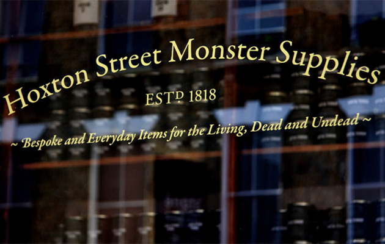
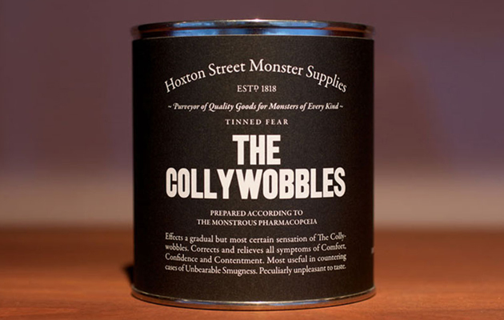
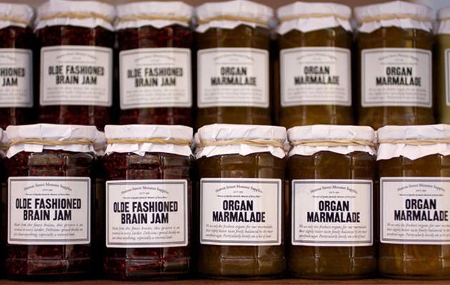
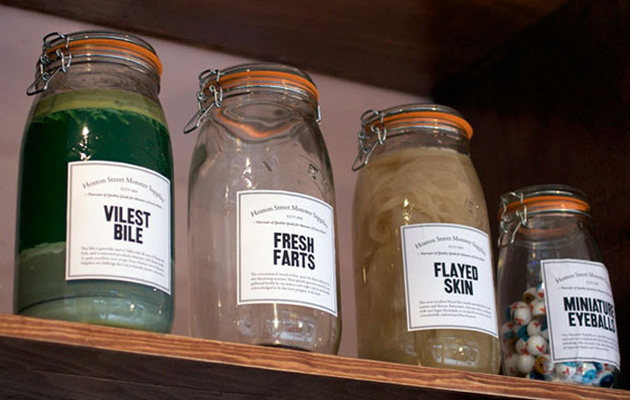
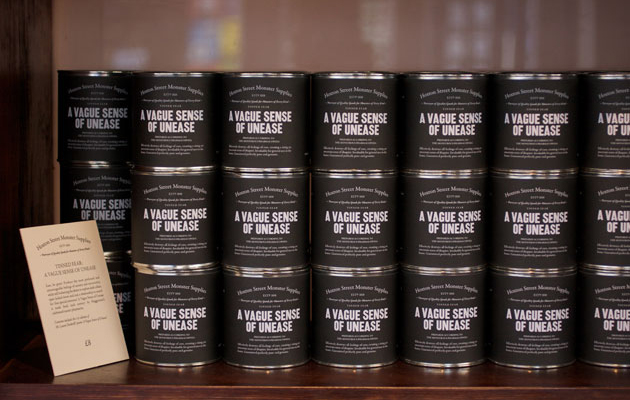
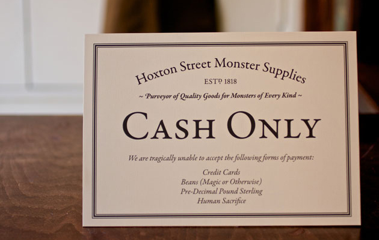

Hoxton Street Monster Supplies
Hoxton Street Monster Supplies is the fantastical shopfront for the Ministry of Stories, a pioneering children’s writing workshop. We helped to set up the project, designed the identity for the shop, as well as the products sold there, and also worked on much of the copywriting.
Inspired by the 868 National stores (Greenwood Space Travel Supply Company, The Brooklyn Superhero Supply Co. and others) We Made This Ltd. worked with the Ministry of Stories to come up with an inspiring environment where children can get 1-on-1 tutoring from professional writers and volunteers. All of the proceeds from the neck-bolt tighteners, thickest human snot, and tinned fear help fund the center.
Found on The Dieline